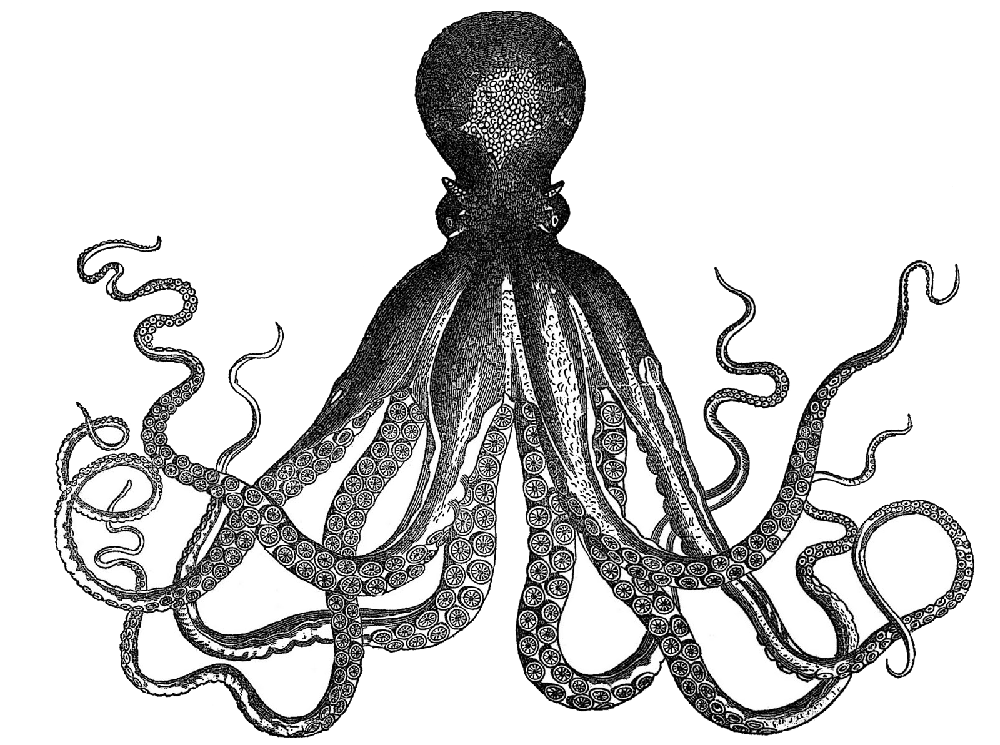
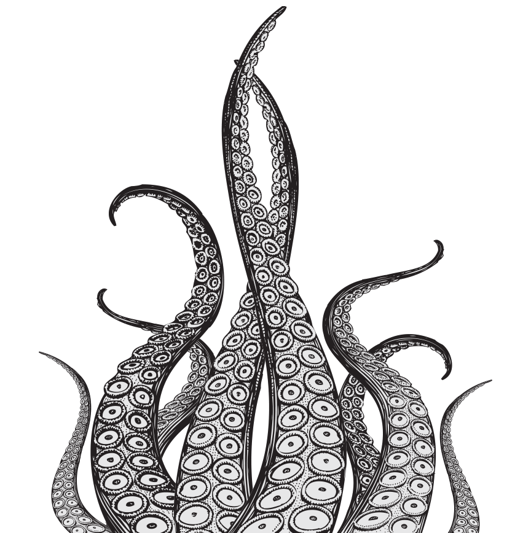

Who is the Kraken?

The kraken (ˈkrɑːkən) is a legendary sea monster of gigantic size and cephalopod-like appearance in Scandinavian folklore. According to the Norse sagas, the kraken dwells off the coasts of Norway and Greenland and terrorizes nearby sailors.
Read More
The kraken (ˈkrɑːkən) is a legendary sea monster of gigantic size and cephalopod-like appearance in Scandinavian folklore. According to the Norse sagas, the kraken dwells off the coasts of Norway and Greenland and terrorizes nearby sailors.
Authors over the years have postulated that the legend may have originated from sightings of giant squids that may grow to 13–15 meters (40–50 feet) in length. The sheer size and fearsome appearance attributed to the kraken have made it a common ocean-dwelling monster in various fictional works. The kraken has been the focus of many sailors passing the North Atlantic and especially sailors from the Nordic countries. Throughout the centuries, the kraken has been a staple of sailors' superstitions and mythos.
Read More

Since the late 18th century, the kraken has been depicted in a number of ways, primarily as a large octopus-like creature, and it has often been alleged that Pontoppidan's kraken might have been based on sailors' observations of the giant squid.
Read More